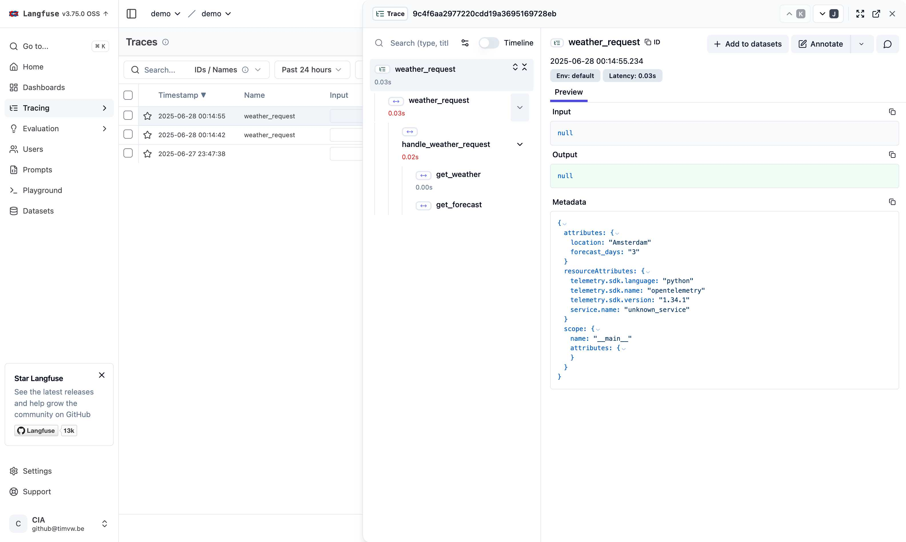
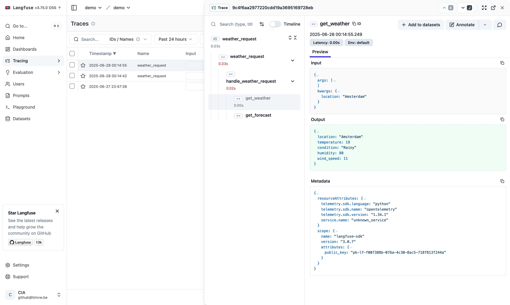

Distributed Tracing with FastMCP: Combining OpenTelemetry and Langfuse
When building distributed AI applications with FastMCP, proper observability becomes crucial. In this post, I’ll show you how to combine OpenTelemetry context propagation with Langfuse to achieve seamless distributed tracing across your MCP client and server components.
The Challenge
Modern AI applications often consist of multiple services communicating over the network. When using FastMCP to build Model Context Protocol servers, we need to:
- Track requests as they flow from client to server
- Monitor LLM interactions and their performance
- Maintain trace context across service boundaries
- Correlate logs and metrics with specific request traces
The Solution: OpenTelemetry + Langfuse
By combining OpenTelemetry’s distributed tracing capabilities with Langfuse’s LLM-specific observability features, we can achieve comprehensive monitoring of our AI applications.
Implementation and How It Works
Let’s build a weather assistant that demonstrates this integration. The complete example code is available on GitHub at fastmcp-otel-langfuse.
1. OpenTelemetry Context Management
First, we create utility functions for context management in weather_assistant/utils/otel_utils.py:
with_otel_context(): A context manager that extracts and activates OpenTelemetry context from carrier headerswith_otel_context_from_headers(): A decorator that extracts HTTP headers and establishes OpenTelemetry context before Langfuse creates its spans
2. MCP Server with Tracing
The weather assistant server implementation in weather_assistant/server.py uses a decorator stack on each tool:
@mcp.tool()- Registers the function as an MCP tool@with_otel_context_from_headers- Extracts and activates the OTel context from HTTP headers@observe- Creates a Langfuse span within the active context
This ensures that server-side spans are properly linked to the client’s trace context.
3. MCP Client with Trace Propagation
The client implementation in weather_assistant/client.py propagates trace context by:
- Creating an OpenTelemetry span for the operation
- Extracting the trace context using
inject(carrier) - Passing the context as HTTP headers via
StreamableHttpTransport
This enables distributed tracing across the client-server boundary.
4. Configuration
The configuration setup in weather_assistant/config/tracing.py initializes both OpenTelemetry and Langfuse with proper resource attributes and connection settings.
5. The Result
This approach provides:
- Distributed traces across client and server
- LLM-specific metrics from Langfuse
- Automatic parent-child relationships between spans
- Correlation between infrastructure and LLM metrics
Benefits
- Complete Visibility: See the entire request flow from client to server
- LLM Performance Tracking: Monitor token usage, latency, and costs
- Debugging: Easily trace issues across service boundaries
- Standards-Based: Uses W3C Trace Context for compatibility
Traces in Langfuse
After making requests through the weather assistant, you can view the distributed traces in Langfuse. The trace overview clearly shows the parent-child relationship between spans:

In this view, you can see:
weather_request(client-side span) as the parenthandle_weather_request(server-side span) nested as a childget_weatherandget_forecast(individual tool calls) nested within the server span
This hierarchy demonstrates successful trace context propagation across the MCP client-server boundary.
Clicking on a specific span reveals detailed information about that operation, including input/output data and metadata:

Conclusion
By combining OpenTelemetry and Langfuse with FastMCP, we achieve comprehensive observability for distributed AI applications. The decorator-based approach keeps the code clean while ensuring proper context propagation across service boundaries.
This pattern scales well as your application grows - you can add more services, and the trace context will flow through all of them, giving you end-to-end visibility into your AI system’s behavior.
Happy tracing! 🔍✨